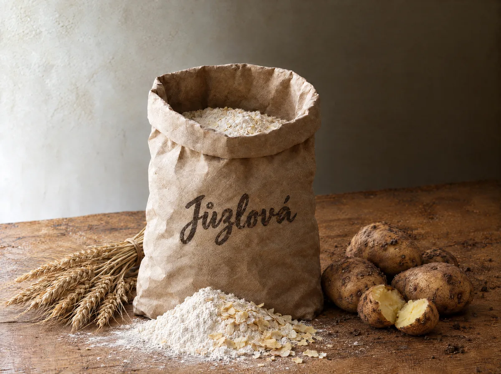

Kartoffelknödel-Mischung
Die Kartoffelknödel-Mischung ist ein Kartoffelteig-Fertigpulver aus der Familienwerkstatt Jůzlová in Kochánov, Vysočina, Tschechien. Ein 5-kg-Sack kostet 250 Kč. Aus einem Teig entstehen klassische und gefüllte Knödel, Mohnnudeln, Kroketten und Gnocchi.
- Preis
- 5 kg / 250 Kč
- So bestellen Sie
- Kontakt · +420 728 466 141 · juzlj@seznam.cz

Kartoffelteig in Pulverform ist unser gefragtestes Produkt. Wir verwenden hochwertiges Weizenmehl mit dem tschechischen Gütesiegel KLASA aus der nahegelegenen Mühle in Havlíčkův Brod; getrocknete Kartoffelflocken sorgen für den typischen Geschmack und die Konsistenz.
Was Sie aus dem Teig zubereiten können
- klassische Kartoffelknödel zu Braten
- mit Fleisch oder Obst gefüllte Knödel
- Mohnnudeln (šišky s mákem)
- frittierte Kroketten
- hausgemachte Gnocchi
Am natürlichen Geschmack erkennen Sie: In diesem Teig steckt nichts Überflüssiges — nur das, was in einen Kartoffelknödel gehört.
Zutaten und Nährwerte
- Füllmenge
- 5 kg
- Zutaten
- Weizenmehl, Kartoffelpüreepulver (natürlicher Farbstoff E 100, Antioxidationsmittel E 304 und E 223, Emulgator E 471), Salz, Trockenei, Backtriebmittel, Stärke
- Allergene
- Gluten, Trockenei
- Lagerung
- Trocken und kühl lagern.
Nährwerte je 100 g
| Energie | 1432,7 kJ (342 kcal) |
| Kohlenhydrate | 71,53 g |
| Eiweiß | 9,55 g |
| Fett | 1,42 g |
| Salz | 2 g |
Die Angaben entsprechen dem Etikett auf dem 5-kg-Sack.
Zubereitung
- 1 kg der Mischung in eine Schüssel geben und mit 1 Liter Wasser übergießen.
- Gründlich durchkneten und den Teig 2 bis 3 Minuten ruhen lassen.
- Aus dem Teig Rollen von etwa 6 cm Durchmesser formen.
- In kochendes Wasser geben und je nach Größe der Knödel 15 bis 20 Minuten garen.
Häufige Fragen
Wie lange dauert die Zubereitung?
Einfach das Pulver mit Wasser vermengen, formen und kochen — die Knödel stehen in etwa 20 Minuten auf dem Tisch (2–3 Minuten ruhen, 15–20 Minuten kochen).
Wie viele Portionen ergibt der 5-kg-Beutel?
Aus einem 5-kg-Beutel bereiten Sie eine Beilage für etwa 60–70 Portionen zu.